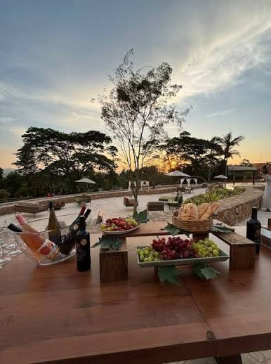
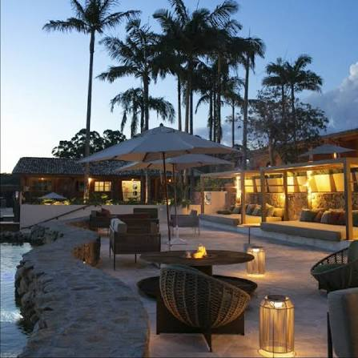
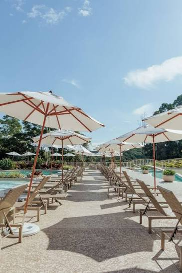
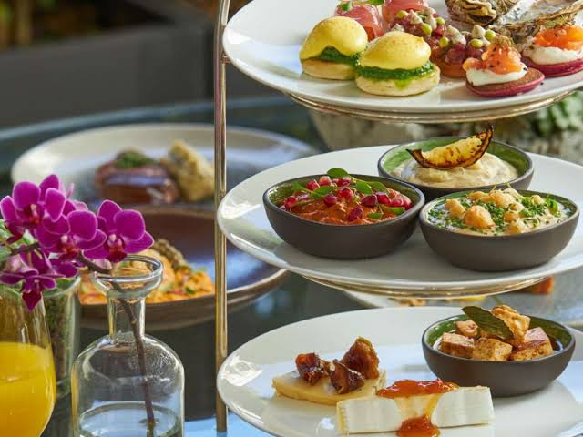
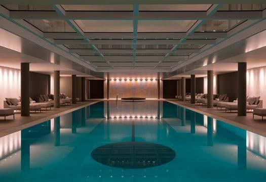
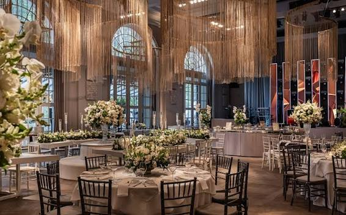
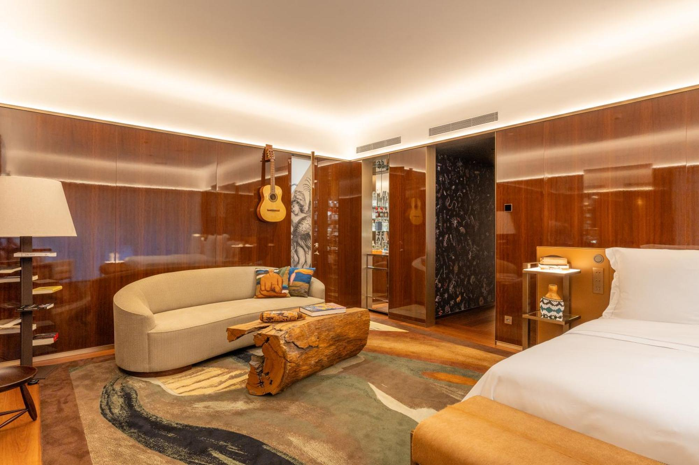
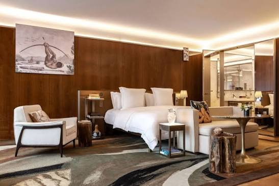
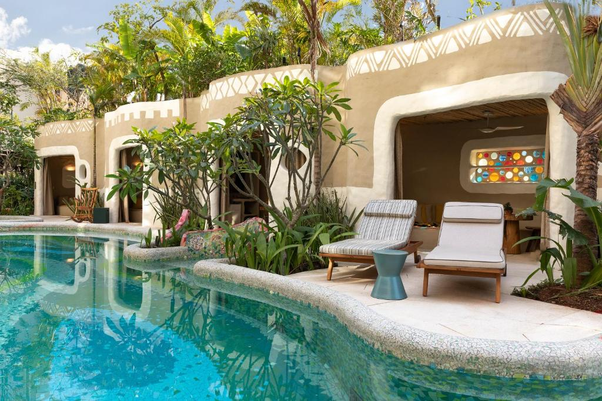
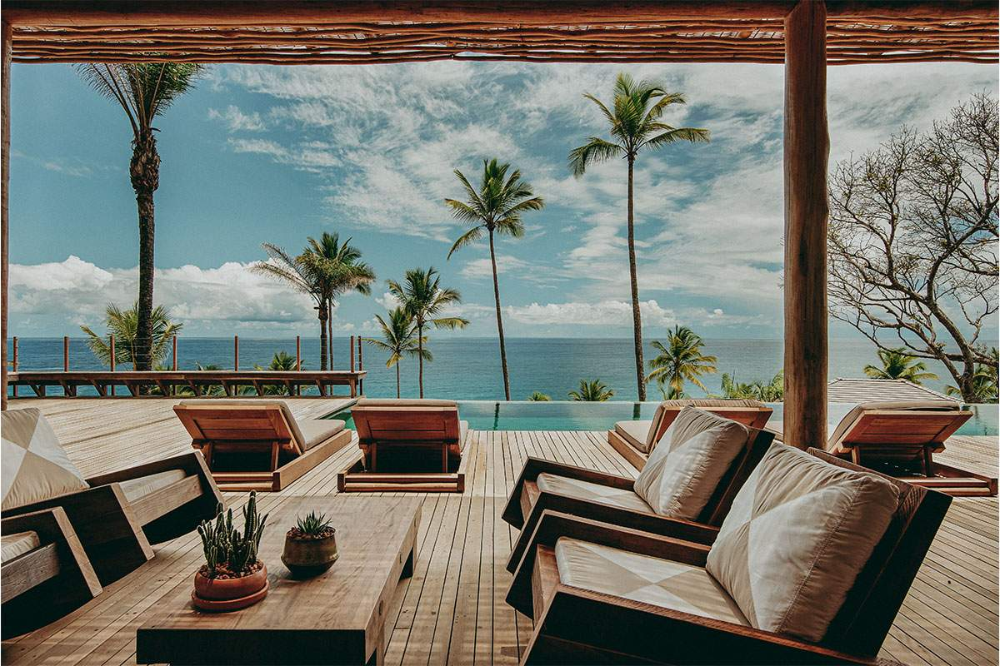

Hotel Villa Rossa

La aventura.
En Villa Rossa, la relajación para adultos y la diversión para niños se unen en una estancia rodeada de naturaleza.Mientras los más pequeños exploran espacios que despiertan su imaginación, los adultos disfrutan de momentos de tranquilidad. Entre piscinas, senderos y una gastronomía que invita a disfrutar de la mesa, las vacaciones ofrecen tiempo para lo que más importa: estar juntos.

A Travessia
Agradecer: Reconocer el ciclo por el que uno ha pasado. Desapego: Deja ir lo que ya ha cumplido su propósito. Cuidadoso: Abraza tu cuerpo y descansa. Naturaleza: Reconectando con el bosque. Afecto: Fortalecer los lazos. Intención: Elegir la palabra del año. Rebaño: Declara el nuevo vuelo.

Day Use
Nuestro programa está diseñado para que todos puedan desconectar de la rutina y reconectar entre sí en un entorno que combina naturaleza, ocio y un ambiente acogedor. Entre senderos, tirolinas y nuestro circuito extremo , el día adquiere un ritmo dinámico y lleno de aventuras. Para quienes buscan relajarse, tenemos el spa ; y para los amantes del deporte, canchas de tenis, pickleball y tenis playa . Y para quienes disfrutan de un buen paseo, los senderos sombreados del Bosque Atlántico invitan a bajar el ritmo y disfrutar del momento. Un día en Villa Rossa no es solo una escapada , es una experiencia transformadora.
Palácio Tangará

Gastronómia
CUna experiencia para quienes aprecian la alta cocina, la comodidad y los momentos inolvidables. Descubra la cocina de autor del chef Jean-Georges Vongerichten, galardonado con una estrella Michelin, en Tangará Jean-Georges, su único restaurante en Sudamérica, a través de un viaje gastronómico de seis platos. Complete la experiencia con una estancia de una noche, una bebida de bienvenida y desayuno, rodeado de la naturaleza del Parque Burle Marx.

Flow - Spa de día
Un día para encontrar el equilibrio entre el autocuidado, la relajación y la energía en São Paulo. El Balance Day Spa combina diferentes momentos de bienestar en el Lancôme Absolue Spa, rodeado de la exuberante vegetación del Parque Burle Marx, para una desconexión total de la rutina.Una opción ideal para quienes desean cuidar su cuerpo, revitalizarse y disfrutar del día con mayor ligereza. Perfecto para disfrutarlo solo, compartirlo con alguien o regalar un momento de autocuidado.

Nochevieja
Celebre la llegada de 2027 en una de las noches más especiales del año en el Palácio Tangará. Con una estadía de dos noches, la experiencia incluye una elegante celebración de Nochevieja en el Salón de Cristal, con cena de Nochevieja, barra libre con champán Moët & Chandon, vinos, licores premium y cócteles de autor.El programa también incluye una banda en vivo y un DJ para ambientar la celebración de Año Nuevo, creando el escenario perfecto para brindar por los nuevos logros y comenzar el año rodeado de sofisticación, gastronomía y momentos inolvidables.
Rosewood São Paulo

Deluxe King
Las elegantes y modernas habitaciones Deluxe King están bellamente decoradas con detalles cuidadosamente seleccionados y un vibrante toque de arte brasileño. Cuentan con una cama king y un espacioso baño de mármol con ducha de efecto lluvia.

Primer Rey
Las habitaciones Premier King rinden homenaje a la herencia brasileña con la decoración contemporánea de Philippe Starck. Cuentan con elegantes accesorios, una cama king size y baños de mármol brasileño con bañera y ducha de efecto lluvia independiente.

Dos Reinas
Las habitaciones más espaciosas del Rosewood São Paulo ofrecen una armoniosa combinación de confort y auténtica expresión artística brasileña. Estas habitaciones Grand Premier cuentan con dos camas tamaño queen, una sala de estar, elegantes baños de mármol y duchas de efecto lluvia independientes.
Barracuda Hotel & Villas

The Corner
Con impresionantes vistas al océano, The Corner es la suite principal del hotel y una opción ideal para familias. Esta habitación se puede combinar con la Suite Estándar, garantizando privacidad y comodidad para hasta 5 personas.

The Forest
Ubicadas en la planta baja, las Forest Suites se encuentran inmersas en la Selva Atlántica, ofreciendo un espacio tranquilo para desconectar. Los tonos verdes y los sonidos de la naturaleza crean una sensación de calma y conexión con un ritmo más pausado y consciente.

The Barracuda
Ubicadas en la planta superior del hotel, las Barracuda Suites ofrecen vistas al océano y a la Selva Atlántica. Sus interiores minimalistas en tonos naturales se abren a amplios balcones con un diseño exclusivo, creando un espacio privado y acogedor para disfrutar del paisaje.